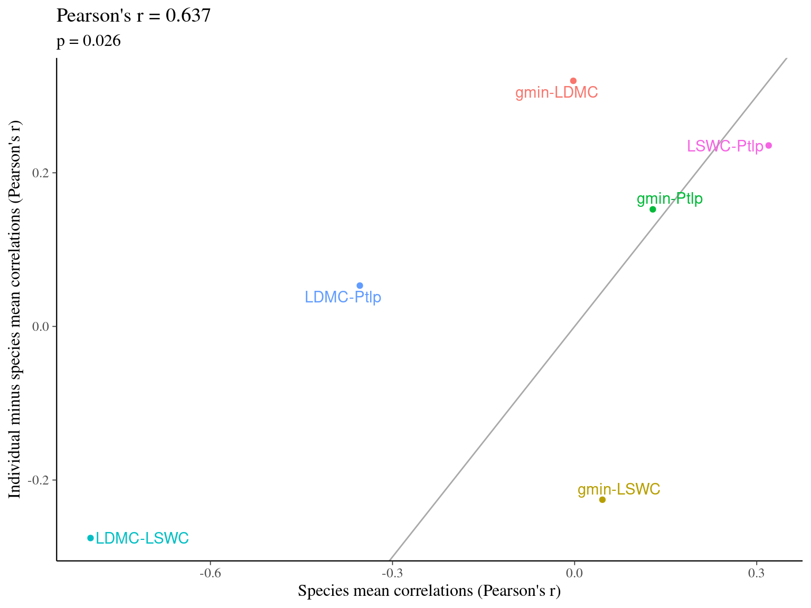
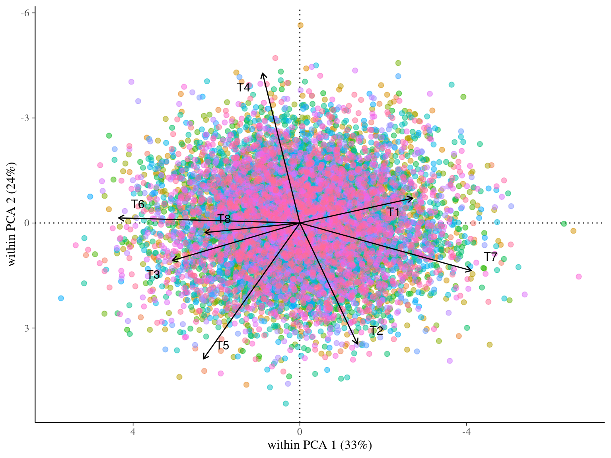

Chapter 1 Virtual data
This chapter demonstrates the importance of a balanced design in the distribution of variance, in contrast to the many papers reporting inter- and intraspecific variation in unbalanced designs. It also virtually explores the evaluation of leaf and measurement variation.
1.1 Simulation
We simulated thus \(T=8\) trait for \(S=100\) species with an among-species trait variance \(\sigma_{S}=1\) including each \(S=100\) individuals per species with an within-species trait variance \(\sigma_{I}=1\).
Figure 1.1: Trait distribution in the virtual community.

Figure 1.2: Correlations among simulated traits.
1.2 Species and individual sampling
We tested the effect of 3 sampling strategies on variance partitioning (Fig. ??):
- sampling of 100 individuals unbalanced in species (25 species with 4 individuals)
- sampling of 100 individuals unbalanced in individuals (4 species with 25 individuals)
- sampling of 100 individuals unbalanced in species and individual (10 species with 10 individuals)
Figure 1.3: Trait distribution per species with balanced and unbalanced sampling design.
1.3 Trait variation
1.3.1 Coefficients of variation (CV)

Figure 1.4: Effect of the sampling strategy on the coefficient of variation. Coefficients of variation were obtained for every sampling strategy: 4 individuals in 25 species (unbalanced species), 25 individuals in 4 species (unbalanced individuals), and 10 individuals in 10 species (balanced). Dashed line represents the expected variance partitioning based on the full community of 100 individuals in 100 species.
1.3.2 Variance partitionning (LMM)

Figure 1.5: Effect of the sampling strategy on variance partitioning. Variance partitioning was obtained using linear mixed models for every sampling strategy: 4 individuals in 25 species (unbalanced species), 25 individuals in 4 species (unbalanced individuals), and 10 individuals in 10 species (balanced). Dashed line represents the expected variance partitioning based on the full community of 100 individuals in 100 species.
1.4 Trait co-variation
1.4.1 Among species (PCA)

1.4.2 Within species (wPCA)
